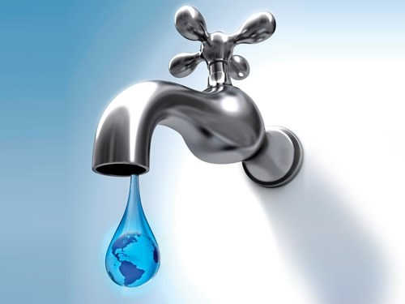
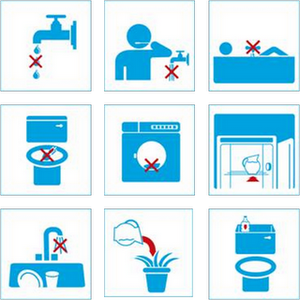

COMO PREVENIR EL AGUA

Las tres cuartas partes de la superficie de la Tierra están cubiertas de agua, pero de ésta gran cantidad apenas el 2.5% es apta para el consumo humano. Al ser tan importante para la vida en nuestro planeta es necesario que aprendamos a cuidarla y racionarla.
Si eres de los afortunados que tienen acceso al agua potable puedes tomar acciones simples desde tu casa y lugar de trabajo que harán una diferencia real en favor de nuestro planeta.
TIPS PARA PREVENIR EL AGUA:
- Cierra la llave del lavabo mientras te enjabonas las manos, te rasuras o te lavas los dientes. Una llave abierta consume ¡hasta 12 litros de agua por minuto!
- Usa regadera en vez de tina al bañarte; cierra la regadera mientras te enjabonas.
- Junta el agua de la regadera en una cubeta mientras sale fría y úsala para el inodoro o para tus macetas.
- ¡No uses el inodoro como bote de basura! Ahorrarás de 6 a 12 litros de agua en cada descarga.
- Repara las tuberías y llaves que goteen en cocinas y baños. Ahorrarás una media de 170 litros de agua al mes.
- Al lavar la vajilla cierra la llave mientras la enjabonas, enjuaga la loza “en grupos” (primero todos los vasos, por ejemplo); así aprovechas mejor el agua. Procura no abrir toda la llave para enjuagar la vajilla.
- Cuando utilices aceite para cocinar no lo viertas en el desagüe, esto contamina el agua corriente de la llave. Puedes utilizar un frasco para almacenarlo y depositarlo en la basura.
- Usa cubetas con agua para lavar coches y banquetas en vez de usar manguera; también ahorrarás hasta 12 litros de agua cada minuto.

¿SABIAS QUE?.. UN DATO CURIOSOS:
A pesar de que el agua es un recurso vital en nuestra vida cotidiana, rara vez nos detenemos a pensar por qué es importante cuidarla y qué haríamos sin ella. El agua la necesitamos como parte de nuestra rutina de sanidad y también para la producción de comida y una gran variedad de objetos.
Por ejemplo, se necesitan 25 litros de agua para producir 1 papa; 70 litros para una manzana; 13 litros para 1 jitomate; 135 litros para 1 huevo; 62 litros para 1 plato de papaya; y 15,000 litros para 1 kilo de carne. Asimismo, la producción de 1 hamburguesa requiere 2,400 litros de agua y de 1 playera de algodón mediana requiere 4,100 litros.
Además de los retos relacionados con el agotamiento del agua en las próximas décadas, actualmente 884 millones de personas (una octava parte de la población mundial) no tienen acceso a agua potable. Esto es un factor significativo para el tema de salud pública ya que el acceso a agua limpia es crucial para reducir las enfermedades y la tasa de mortalidad, especialmente entre la población infantil. De acuerdo a la Organización Mundial de la Salud (OMS) mueren aproximadamente 1.4 millones de niños al año por consumir agua contaminada.
VIDEO DE APOYO